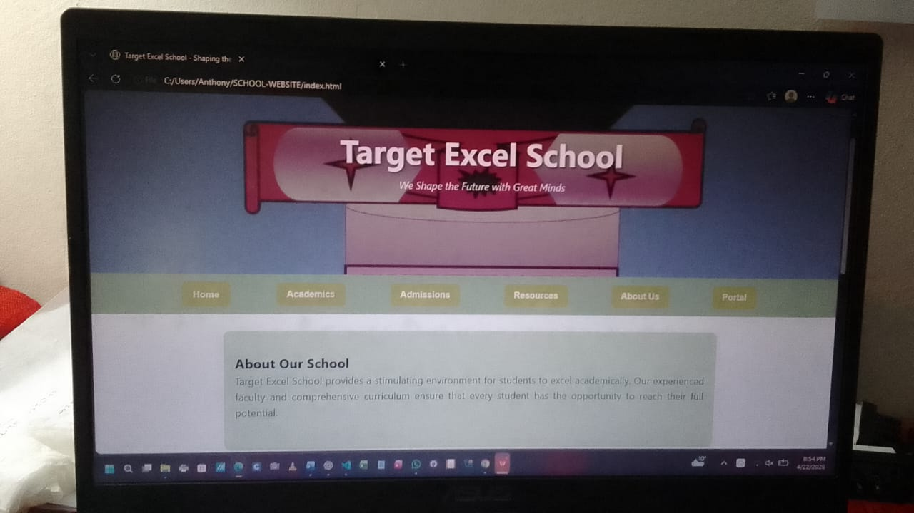

Bridging logic, Ethics, and ICT Infrastructure
I am a versatile and prolific Digital Architect pioneering the bridge between human reasoning and technology. By applying the philosophical principles of Logic, Metaphysics, and Epistemology, I design and manage technical systems with a deep understanding of how they impact human well-being and the acquisition of knowledge
I treat code (C, Python, HTML) as a formal logical argument where every line must be sound to reach a valid conclusion.
I use virtualization (VirtualBox/Ubuntu) to understand the nature of digital existence and isolated environments.
I design user interfaces (HTML/CSS) based on how humans perceive, process, and retain information.

View Live SystemDescription: Developed a structured web interface using semantic HTML and CSS. I applied Epistemological principles to ensure information architecture was clear, reducing cognitive friction for the user.
Tech Stack: VS Code, HTML5, CSS3, Git.
Ref: Git Commit ac34cef... | Built with VS Code Live Server
Description: Configured a virtualized Linux environment to explore the Metaphysics of digital sandboxing. This allows for secure maintenance and troubleshooting without compromising the host system.
Tech Stack: Oracle VM VirtualBox, Ubuntu Linux.